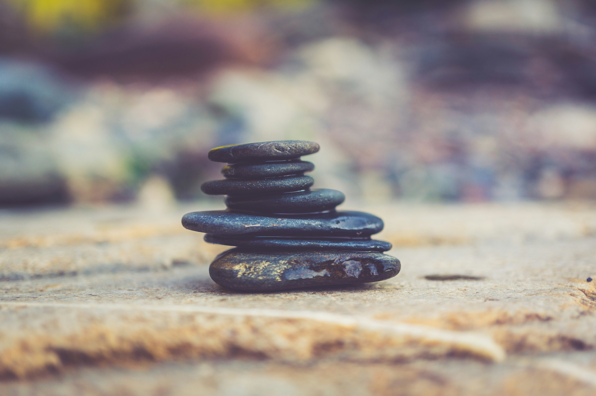

Meditation Techniques
| Technique | Description |
|---|---|
| Breath Awareness | Focus on the natural rhythm of your breath, observing each inhale and exhale. |
| Body Scan | Progressively relax each part of your body, starting from your toes up to your head. |
| Loving-Kindness | Generate feelings of love and compassion towards yourself and others. |
| Visualization | Imagine yourself in a peaceful and serene environment, engaging all your senses. |
Meditation Benefits
- Reduces stress and anxiety
- Improves focus and concentration
- Promotes emotional well-being
- Enhances self-awareness
- Increases feelings of gratitude and contentment
Meditation Quote
"The mind is everything. What you think you become." - Buddha
- Here are some ways you can practice meditation on your own, whenever you choose:
- Breathe deeply. This is good for beginners because breathing is a natural function.
- Focus all your attention on your breathing. Feel your breath and listen to it as you inhale and exhale through your nostrils. Breathe deeply and slowly. When your mind wanders, gently return your focus to your breathing.
- Scan your body. When using this technique, focus attention on each part of your body. Become aware of how your body feels. That might be pain, tension, warmth or relaxation.
- Mix body scanning with breathing exercises and think about breathing heat or relaxation into and out of the parts of your body.
- Repeat a mantra. You can create your own mantra. It can be religious or not. Examples of religious mantras include the Jesus Prayer in the Christian tradition, the holy name of God in Judaism, or the om mantra of Hinduism, Buddhism and other Eastern religions. Walk and meditate. Meditating while walking is a good and healthy way to relax. You can use this technique anywhere you're walking, such as in a forest, on a city sidewalk or at the mall.
- When you use this method, slow your walking pace so that you can focus on each movement of your legs or feet. Don't focus on where you're going. Focus on your legs and feet. Repeat action words in your mind such as "lifting," "moving" and "placing" as you lift each foot, move your leg forward and place your foot on the ground. Focus on the sights, sounds and smells around you.
- Pray. Prayer is the best known and most widely used type of meditation. Spoken and written prayers are found in most faith traditions.
- You can pray using your own words or read prayers written by others. Check the self-help section of your local bookstore for examples. Talk with your rabbi, priest, pastor or other spiritual leader about possible resources.
- Read and reflect. Many people report that they benefit from reading poems or sacred texts and taking a few moments to think about their meaning.
- You also can listen to sacred music, spoken words, or any music that relaxes or inspires you. You may want to write your thoughts in a journal or discuss them with a friend or spiritual leader.
- Focus your love and kindness. In this type of meditation, you think of others with feelings of love, compassion and kindness. This can help increase how connected you feel to others.